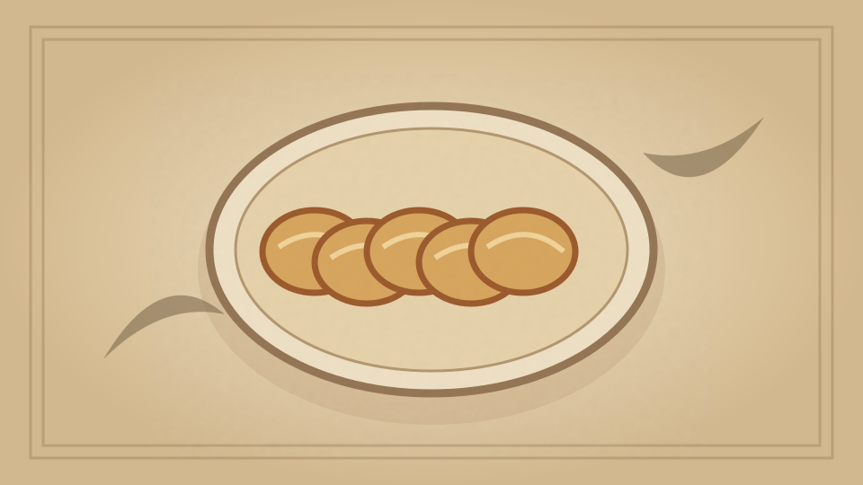

1910 · Fannie Merritt Farmer · BISCUITS, BREAKFAST CAKES, AND SHORTCAKES
Maryland Biscuit
The Boston Cooking-School Cook Book

Historical Recipe
The following text is extracted from the 1910 edition, retaining historical terminology and quantities.
Original Ingredients & Directions
1 pint flour
⅓ cup lard
1 teaspoon salt
Milk and water in equal quantities
Southern Pupil
Mix and sift flour and salt; work in lard with tips of fingers, and moisten to a stiff dough. Toss on slightly floured board, and beat with rolling-pin thirty minutes, continually folding over the dough. Roll one-third inch in thickness, shape with round cutter two inches in diameter, prick with fork, and place on a buttered tin. Bake twenty minutes in hot oven.
78 GRIDDLE-CAKES
Automatically extracted transcription; editorial verification pending. Historical instructions may not meet modern food-safety standards.